搜索技术
状态空间搜索 ：是一种通用的问题求解方法，它首先把问题描述转换为一个状态空间图，然剪枝策略 用于尽可能避免不必要的无效搜索，启发式信息 用来加速朝目标状态逼近的速度。
问题的状态空间表示
状态 ：
X = [ x 1 , x 2 , ⋯ , x n ] X=\left[x_1, x_2, \cdots, x_n\right]
X = [ x 1 , x 2 , ⋯ , x n ]
状态分量 ：每个元素 x i x_i x i i = 0 , 1 , ⋯ , n i=0,1,\cdots,n i = 0 , 1 , ⋯ , n
操作符 ：把一个状态转变成另一个状态的操作或者运算。
状态图 ：状态定义为图的结点，操作符定义为图的边，一个问题的全部可能状态则可以表示为一个图。
路径 ：操作符序列连接起来的状态图中的一个状态序列。
路径耗散 ：一条路径性能或求解问题的代价。
状态空间图 ：( S , A , G , F ) (S,A,G,F) ( S , A , G , F )
S S S A A A G G G or \text {or} or F F F
搜索 ：在状态空间图中从初始状态出发，执行特定的操作，试探地寻找目标状态的过程。当然，也可以从目标结点到初始结点反向进行。状态空间图中从初始状态到目标状态的路径则代表问题的解。解的优劣由路径耗散函数度量，最优解就是路径耗散函数值最小的路径。
【传教士渡河问题】在河的左岸有三个传教士、一条船和三个野人，传教士们想用
① 教士和野人都会划船，但船一次最多只能装运两个人；
② 在任何岸边野人数目都不得超过传教士，否则传教士就会遭遇危险：被野人攻击甚至
此外，假定野人会服从任何一种过河安排，试设计出一个确保全部成员安全过河的计划。
（1）状态表示
S = ( m , c , b ) S=(m,c,b) S = ( m , c , b )
m m m m = { 0 , 1 , 2 , 3 } m=\{0,1,2,3\} m = { 0 , 1 , 2 , 3 } c c c c = { 0 , 1 , 2 , 3 } c=\{0,1,2,3\} c = { 0 , 1 , 2 , 3 } b b b b = { 0 , 1 } b=\{0,1\} b = { 0 , 1 }
初始状态：S 0 = ( 3 , 3 , 1 ) S_0=(3,3,1) S 0 = ( 3 , 3 , 1 )
目标状态：S g = ( 0 , 0 , 0 ) S_g=(0,0,0) S g = ( 0 , 0 , 0 )
（2）操作符集合
左岸 → \rightarrow → L i j L_{ij} L i j
右岸 → \rightarrow → R i j R_{ij} R i j
i i i
j j j
F = { L 01 , L 10 , L 11 , L 02 , L 20 , R 01 , R 10 , R 11 , R 02 , R 20 } F=\left\{L_{01}, L_{10}, L_{11}, L_{02}, L_{20}, R_{01}, R_{10}, R_{11}, R_{02}, R_{20}\right\}
F = { L 0 1 , L 1 0 , L 1 1 , L 0 2 , L 2 0 , R 0 1 , R 1 0 , R 1 1 , R 0 2 , R 2 0 }
状态 ( m , c , b ) 状态 ( m , c , b ) 状态 ( m , c , b ) 状态 ( m , c , b ) S 0 331 S 8 131 S 16 330 S 24 130 S 1 321 S 9 121 S 17 320 S 25 120 S 2 311 S 10 111 S 18 310 S 26 110 S 3 301 S 11 101 S 19 300 S 27 100 S 4 231 S 12 031 S 20 230 S 28 030 S 5 221 S 13 021 S 21 220 S 29 020 S 6 211 S 14 011 S 22 210 S 30 010 S 7 201 S 15 001 S 23 200 S 31 000 \begin{array}{|c|c||c|c||c|c||c|c|}
\hline \text { 状态 } & (m, c, b) & \text { 状态 } & (m, c, b) & \text { 状态 } & (m, c, b) & \text { 状态 } & (m, c, b) \\
\hline S_0 & 331 & S_8 & 131 & S_{16} & 330 & S_{24} & 130 \\
\hline S_1 & 321 & S_9 & 121 & S_{17} & 320 & S_{25} & 120 \\
\hline S_2 & 311 & S_{10} & 111 & S_{18} & 310 & S_{26} & 110 \\
\hline S_3 & 301 & S_{11} & 101 & S_{19} & 300 & S_{27} & 100 \\
\hline S_4 & 231 & S_{12} & 031 & S_{20} & 230 & S_{28} & 030 \\
\hline S_5 & 221 & S_{13} & 021 & S_{21} & 220 & S_{29} & 020 \\
\hline S_6 & 211 & S_{14} & 011 & S_{22} & 210 & S_{30} & 010 \\
\hline S_7 & 201 & S_{15} & 001 & S_{23} & 200 & S_{31} & 000 \\
\hline
\end{array}
状态 S 0 S 1 S 2 S 3 S 4 S 5 S 6 S 7 ( m , c , b ) 3 3 1 3 2 1 3 1 1 3 0 1 2 3 1 2 2 1 2 1 1 2 0 1 状态 S 8 S 9 S 1 0 S 1 1 S 1 2 S 1 3 S 1 4 S 1 5 ( m , c , b ) 1 3 1 1 2 1 1 1 1 1 0 1 0 3 1 0 2 1 0 1 1 0 0 1 状态 S 1 6 S 1 7 S 1 8 S 1 9 S 2 0 S 2 1 S 2 2 S 2 3 ( m , c , b ) 3 3 0 3 2 0 3 1 0 3 0 0 2 3 0 2 2 0 2 1 0 2 0 0 状态 S 2 4 S 2 5 S 2 6 S 2 7 S 2 8 S 2 9 S 3 0 S 3 1 ( m , c , b ) 1 3 0 1 2 0 1 1 0 1 0 0 0 3 0 0 2 0 0 1 0 0 0 0
删除左岸野人数目超过传教士的情况：S 4 , S 8 , S 9 , S 20 , S 24 , S 25 S_4, S_8, S_9, S_{20}, S_{24}, S_{25} S 4 , S 8 , S 9 , S 2 0 , S 2 4 , S 2 5
删除右岸野人数目超过传教士的情况：S 6 , S 7 , S 11 , S 22 , S 23 , S 27 S_6, S_7, S_{11}, S_{22}, S_{23}, S_{27} S 6 , S 7 , S 1 1 , S 2 2 , S 2 3 , S 2 7
删除四种不可能的情况：
船不可能停靠在无人的岸边：S 15 S_{15} S 1 5 S 16 S_{16} S 1 6
传教士不可能在野人数量占优势的情况下把船安全划回来：S 3 S_3 S 3
传教士不可能在野人数量占优势的情况下把船安全划过去：S 28 S_{28} S 2 8
综上所述，真正符合约束条件的只有 16 16 1 6
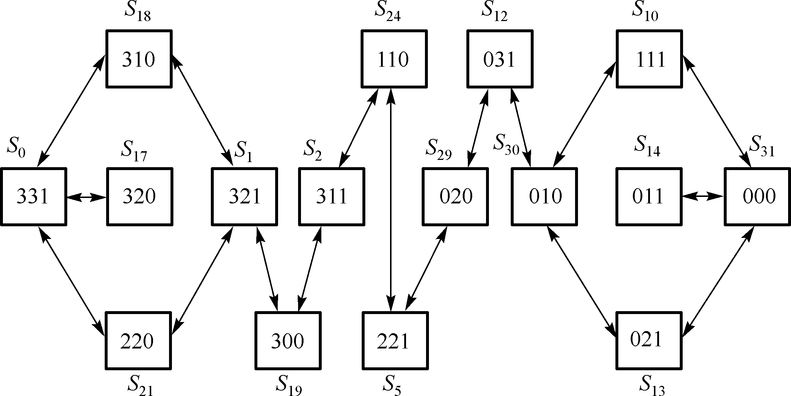
状态空间搜索算法分类：
基于枚举策略的搜索
“优化+枚举”的搜索
回溯算法 ：深度优先搜索 + 剪枝策略分支限界算法 ：广度优先搜索 + 剪枝策略
启发式搜索 ：基于规则的优化搜索算法
深度优先搜索
深度优先搜索（Depth First Search,DFS \text {Depth First Search,DFS} Depth First Search,DFS ：给定图 G = ( V , E ) G=(V,E) G = ( V , E ) v v v DFS \text {DFS} DFS v v v v v v v v v w w w w w w w w w w w w v v v v v v v v v G G G
能进则进，不进则换，无换则退
举例：给定有向图 G a = ( V , E ) G_{a}=(V,E) G a = ( V , E ) G b = ( V , E ) G_b=(V,E) G b = ( V , E )
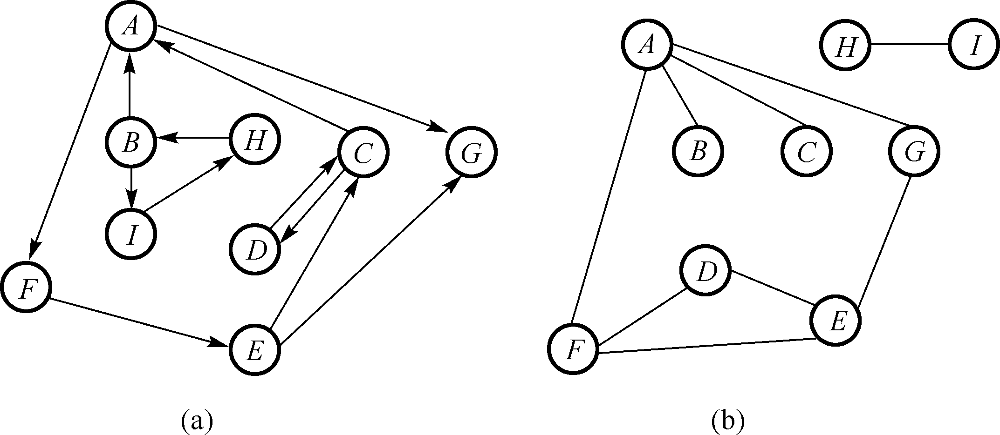
v i s t e d [ ] visted[] v i s t e d [ ]
依次是 { A , B , C , D , E , F , G , H , I } \{A,B,C,D,E,F,G,H,I\} { A , B , C , D , E , F , G , H , I }
v i s t e d [ ] visted[] v i s t e d [ ] 有向图依次访问节点
{ 0 , 0 , 0 , 0 , 0 , 0 , 0 , 0 , 0 } \{0,0,0,0,0,0,0,0,0\} { 0 , 0 , 0 , 0 , 0 , 0 , 0 , 0 , 0 }
{ 1 , 0 , 0 , 0 , 0 , 0 , 0 , 0 , 0 } \{1,0,0,0,0,0,0,0,0\} { 1 , 0 , 0 , 0 , 0 , 0 , 0 , 0 , 0 } A A A
{ 1 , 0 , 0 , 0 , 0 , 1 , 0 , 0 , 0 } \{1,0,0,0,0,1,0,0,0\} { 1 , 0 , 0 , 0 , 0 , 1 , 0 , 0 , 0 } F F F
{ 1 , 0 , 0 , 0 , 1 , 1 , 0 , 0 , 0 } \{1,0,0,0,1,1,0,0,0\} { 1 , 0 , 0 , 0 , 1 , 1 , 0 , 0 , 0 } E E E
{ 1 , 0 , 1 , 0 , 1 , 1 , 0 , 0 , 0 } \{1,0,1,0,1,1,0,0,0\} { 1 , 0 , 1 , 0 , 1 , 1 , 0 , 0 , 0 } C C C
{ 1 , 0 , 1 , 1 , 1 , 1 , 0 , 0 , 0 } \{1,0,1,1,1,1,0,0,0\} { 1 , 0 , 1 , 1 , 1 , 1 , 0 , 0 , 0 } D D D
{ 1 , 0 , 1 , 1 , 1 , 1 , 1 , 0 , 0 } \{1,0,1,1,1,1,1,0,0\} { 1 , 0 , 1 , 1 , 1 , 1 , 1 , 0 , 0 } G G G
{ 1 , 1 , 1 , 1 , 1 , 1 , 1 , 0 , 0 } \{1,1,1,1,1,1,1,0,0\} { 1 , 1 , 1 , 1 , 1 , 1 , 1 , 0 , 0 } B B B
{ 1 , 1 , 1 , 1 , 1 , 1 , 1 , 0 , 1 } \{1,1,1,1,1,1,1,0,1\} { 1 , 1 , 1 , 1 , 1 , 1 , 1 , 0 , 1 } I I I
{ 1 , 1 , 1 , 1 , 1 , 1 , 1 , 1 , 1 } \{1,1,1,1,1,1,1,1,1\} { 1 , 1 , 1 , 1 , 1 , 1 , 1 , 1 , 1 } H H H
v i s t e d [ ] visted[] v i s t e d [ ] 无向图依次访问节点
{ 0 , 0 , 0 , 0 , 0 , 0 , 0 , 0 , 0 } \{0,0,0,0,0,0,0,0,0\} { 0 , 0 , 0 , 0 , 0 , 0 , 0 , 0 , 0 }
{ 1 , 0 , 0 , 0 , 0 , 0 , 0 , 0 , 0 } \{1,0,0,0,0,0,0,0,0\} { 1 , 0 , 0 , 0 , 0 , 0 , 0 , 0 , 0 } A A A
{ 1 , 1 , 0 , 0 , 0 , 0 , 0 , 0 , 0 } \{1,1,0,0,0,0,0,0,0\} { 1 , 1 , 0 , 0 , 0 , 0 , 0 , 0 , 0 } B B B
{ 1 , 1 , 1 , 0 , 0 , 0 , 0 , 0 , 0 } \{1,1,1,0,0,0,0,0,0\} { 1 , 1 , 1 , 0 , 0 , 0 , 0 , 0 , 0 } C C C
{ 1 , 1 , 1 , 0 , 0 , 1 , 0 , 0 , 0 } \{1,1,1,0,0,1,0,0,0\} { 1 , 1 , 1 , 0 , 0 , 1 , 0 , 0 , 0 } F F F
{ 1 , 1 , 1 , 1 , 0 , 1 , 0 , 0 , 0 } \{1,1,1,1,0,1,0,0,0\} { 1 , 1 , 1 , 1 , 0 , 1 , 0 , 0 , 0 } D D D
{ 1 , 1 , 1 , 1 , 1 , 1 , 0 , 0 , 0 } \{1,1,1,1,1,1,0,0,0\} { 1 , 1 , 1 , 1 , 1 , 1 , 0 , 0 , 0 } E E E
{ 1 , 1 , 1 , 1 , 1 , 1 , 1 , 0 , 0 } \{1,1,1,1,1,1,1,0,0\} { 1 , 1 , 1 , 1 , 1 , 1 , 1 , 0 , 0 } G G G
{ 1 , 1 , 1 , 1 , 1 , 1 , 1 , 1 , 0 } \{1,1,1,1,1,1,1,1,0\} { 1 , 1 , 1 , 1 , 1 , 1 , 1 , 1 , 0 } H H H
{ 1 , 1 , 1 , 1 , 1 , 1 , 1 , 1 , 1 } \{1,1,1,1,1,1,1,1,1\} { 1 , 1 , 1 , 1 , 1 , 1 , 1 , 1 , 1 } I I I
🌟 DFS \text {DFS} DFS
1 2 3 4 5 6 7 8 9 10 11 12 13 14 15 function DFS (problem, stack) { node = Make-Node (Initial-State[problem]); stack <- Insert(node, stack); do while (1) { if stack == Empty return failure; node <- Remove-First(stack); visit(node); if State[node] == Goal return Solution(node) sonNodes = Expand(node, problem); stack <- Insert-All(sonNodes, stack); } return ; }
🌟 DFS \text {DFS} DFS
1 2 3 4 5 6 7 8 9 10 function DFS (problem, node) { if State[node] == Goal / Failure return Solution (node); else visit (node); for (iterator sonNode = Init (node); sonNode <= Last (node); sonNode++) if notVisited (sonNode) DFS (sonNode) ; return ; }
广度优先搜索
深度优先搜索（Breadth First Search,BFS \text {Breadth First Search,BFS} Breadth First Search,BFS ：给定图 G = ( V , E ) G=(V,E) G = ( V , E ) v v v BFS \text {BFS} BFS v v v v v v v v v w 1 , w 2 , ⋯ , w t w_1, w_2, \cdots, w_t w 1 , w 2 , ⋯ , w t w i ( i = 1 , 2 , ⋯ , t ) w_i(i=1,2,\cdots,t) w i ( i = 1 , 2 , ⋯ , t ) v v v G G G
由近及远，按层展开
举例：给定有向图 G a = ( V , E ) G_{a}=(V,E) G a = ( V , E ) G b = ( V , E ) G_b=(V,E) G b = ( V , E )
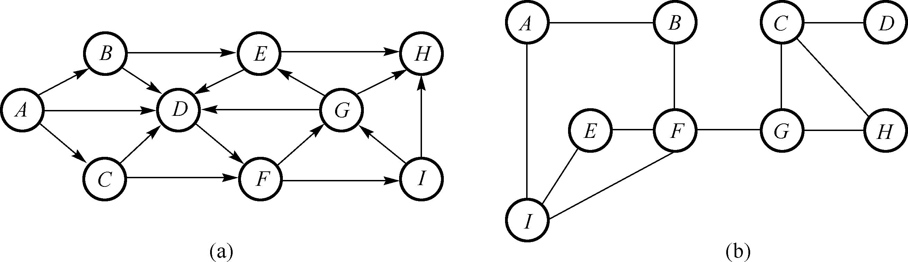
v i s t e d [ ] visted[] v i s t e d [ ]
依次是 { A , B , C , D , E , F , G , H , I } \{A,B,C,D,E,F,G,H,I\} { A , B , C , D , E , F , G , H , I }
v i s t e d [ ] visted[] v i s t e d [ ] 有向图依次访问节点
{ 0 , 0 , 0 , 0 , 0 , 0 , 0 , 0 , 0 } \{0,0,0,0,0,0,0,0,0\} { 0 , 0 , 0 , 0 , 0 , 0 , 0 , 0 , 0 }
{ 1 , 0 , 0 , 0 , 0 , 0 , 0 , 0 , 0 } \{1,0,0,0,0,0,0,0,0\} { 1 , 0 , 0 , 0 , 0 , 0 , 0 , 0 , 0 } A A A
{ 1 , 1 , 0 , 0 , 0 , 0 , 0 , 0 , 0 } \{1,1,0,0,0,0,0,0,0\} { 1 , 1 , 0 , 0 , 0 , 0 , 0 , 0 , 0 } B B B
{ 1 , 1 , 1 , 0 , 0 , 0 , 0 , 0 , 0 } \{1,1,1,0,0,0,0,0,0\} { 1 , 1 , 1 , 0 , 0 , 0 , 0 , 0 , 0 } C C C
{ 1 , 1 , 1 , 1 , 0 , 0 , 0 , 0 , 0 } \{1,1,1,1,0,0,0,0,0\} { 1 , 1 , 1 , 1 , 0 , 0 , 0 , 0 , 0 } D D D
{ 1 , 1 , 1 , 1 , 1 , 0 , 0 , 0 , 0 } \{1,1,1,1,1,0,0,0,0\} { 1 , 1 , 1 , 1 , 1 , 0 , 0 , 0 , 0 } E E E
{ 1 , 1 , 1 , 1 , 1 , 1 , 0 , 0 , 0 } \{1,1,1,1,1,1,0,0,0\} { 1 , 1 , 1 , 1 , 1 , 1 , 0 , 0 , 0 } F F F
{ 1 , 1 , 1 , 1 , 1 , 1 , 0 , 1 , 0 } \{1,1,1,1,1,1,0,1,0\} { 1 , 1 , 1 , 1 , 1 , 1 , 0 , 1 , 0 } H H H
{ 1 , 1 , 1 , 1 , 1 , 1 , 1 , 1 , 0 } \{1,1,1,1,1,1,1,1,0\} { 1 , 1 , 1 , 1 , 1 , 1 , 1 , 1 , 0 } G G G
{ 1 , 1 , 1 , 1 , 1 , 1 , 1 , 1 , 1 } \{1,1,1,1,1,1,1,1,1\} { 1 , 1 , 1 , 1 , 1 , 1 , 1 , 1 , 1 } I I I
v i s t e d [ ] visted[] v i s t e d [ ] 无向图依次访问节点
{ 0 , 0 , 0 , 0 , 0 , 0 , 0 , 0 , 0 } \{0,0,0,0,0,0,0,0,0\} { 0 , 0 , 0 , 0 , 0 , 0 , 0 , 0 , 0 }
{ 1 , 0 , 0 , 0 , 0 , 0 , 0 , 0 , 0 } \{1,0,0,0,0,0,0,0,0\} { 1 , 0 , 0 , 0 , 0 , 0 , 0 , 0 , 0 } A A A
{ 1 , 1 , 0 , 0 , 0 , 0 , 0 , 0 , 0 } \{1,1,0,0,0,0,0,0,0\} { 1 , 1 , 0 , 0 , 0 , 0 , 0 , 0 , 0 } B B B
{ 1 , 1 , 0 , 0 , 0 , 0 , 0 , 0 , 1 } \{1,1,0,0,0,0,0,0,1\} { 1 , 1 , 0 , 0 , 0 , 0 , 0 , 0 , 1 } I I I
{ 1 , 1 , 0 , 0 , 0 , 1 , 0 , 0 , 1 } \{1,1,0,0,0,1,0,0,1\} { 1 , 1 , 0 , 0 , 0 , 1 , 0 , 0 , 1 } F F F
{ 1 , 1 , 0 , 0 , 1 , 1 , 0 , 0 , 1 } \{1,1,0,0,1,1,0,0,1\} { 1 , 1 , 0 , 0 , 1 , 1 , 0 , 0 , 1 } E E E
{ 1 , 1 , 0 , 0 , 1 , 1 , 1 , 0 , 1 } \{1,1,0,0,1,1,1,0,1\} { 1 , 1 , 0 , 0 , 1 , 1 , 1 , 0 , 1 } G G G
{ 1 , 1 , 1 , 0 , 1 , 1 , 1 , 0 , 1 } \{1,1,1,0,1,1,1,0,1\} { 1 , 1 , 1 , 0 , 1 , 1 , 1 , 0 , 1 } C C C
{ 1 , 1 , 1 , 0 , 1 , 1 , 1 , 1 , 1 } \{1,1,1,0,1,1,1,1,1\} { 1 , 1 , 1 , 0 , 1 , 1 , 1 , 1 , 1 } H H H
{ 1 , 1 , 1 , 1 , 1 , 1 , 1 , 1 , 1 } \{1,1,1,1,1,1,1,1,1\} { 1 , 1 , 1 , 1 , 1 , 1 , 1 , 1 , 1 } D D D
🌟 BFS \text {BFS} BFS
1 2 3 4 5 6 7 8 9 10 11 12 13 14 15 function BFS (problem, stack) { node = Make-Node (Initial-State[problem]); queue <- Insert(node, stack); do while (1) { if queue == Empty return failure; node <- Remove-First(queue); visit(node); if State[node] == Goal return Solution(node) sonNodes = Expand(node, problem); queue <- Insert-All(sonNodes, queue); } return ; }
回溯算法
回溯算法 ：状态空间搜索算法，关于问题的状态空间图，包括：
问题状态：X = [ x 1 , x 2 , ⋯ , x k ] \boldsymbol{X}=\left[x_1, x_2, \cdots, x_k\right] X = [ x 1 , x 2 , ⋯ , x k ]
约束条件：每个分量自身约束以及分量之间的约束
操作符集合
解空间：问题的解 ( x 1 , x 2 , ⋯ , x n ) \left(x_1, x_2, \cdots, x_n\right) ( x 1 , x 2 , ⋯ , x n )
常用的剪枝策略：
约束函数剪枝 ：约束函数剪枝可以剪除状态空间图中的不可行解。
限界函数剪枝 ：限界函数剪枝用于剪除状态空间图中的可行但是非最优的解。
基于枚举策略的深度优先搜索算法：
获取 n n n ( x 1 , x 2 , ⋯ , x n ) \left(x_1, x_2, \cdots, x_n\right) ( x 1 , x 2 , ⋯ , x n )
测试是否是问题解
基于回溯策略的深度优先搜索算法：
构造长度为 k k k ( x 1 , x 2 , ⋯ , x k ) \left(x_1, x_2, \cdots, x_k\right) ( x 1 , x 2 , ⋯ , x k ) 1 ⩽ k ⩽ n 1 \leqslant k \leqslant n 1 ⩽ k ⩽ n
测试是否能导出问题解
1 2 3 4 5 6 7 8 9 10 11 12 13 14 15 16 17 function Backtrack (problem, node, bestSolution) { if State[node] == Goal: return Solution (node) else : for sonNode in Next (problem, node): if Constraint (sonNode) and Bound (sonNode, bestSolution): result = Backtrack (problem, sonNode, bestSolution) if result != failure: bestSolution = UpdateSolution (bestSolution, result) return bestSolution } function Recursive-Backtracking (problem) { startNode = Make-Node (Initial-State[problem]) bestSolution = None # Or appropriate initial value return Backtrack (problem, startNode, bestSolution) }
0-1 背包问题
举例：对于n = 3 n=3 n = 3 0 − 1 0-1 0 − 1 c = 30 c=30 c = 3 0 w = ⟨ 16 , 15 , 15 ⟩ w=\langle 16,15,15\rangle w = ⟨ 1 6 , 1 5 , 1 5 ⟩ p = ⟨ 45 , 25 , 25 ⟩ p=\langle 45,25,25\rangle p = ⟨ 4 5 , 2 5 , 2 5 ⟩
解析：
问题状态 ：
X = [ x 1 , ⋯ , x k ] \boldsymbol{X}=\left[x_1, \cdots, x_k\right]
X = [ x 1 , ⋯ , x k ]
1 ⩽ k ⩽ 3 1 \leqslant k \leqslant 3 1 ⩽ k ⩽ 3 1 , 2 , ⋯ , k 1,2, \cdots, k 1 , 2 , ⋯ , k x i = { 0 , 1 } x_i=\{0,1\} x i = { 0 , 1 } 1 1 1 i i i
约束条件 ：
∑ i = 1 k x i w i ⩽ C \sum_{i=1}^k x_i w_i \leqslant C
i = 1 ∑ k x i w i ⩽ C
操作符 ：
第 k + 1 k+1 k + 1 x k + 1 = 1 x_{k+1}=1 x k + 1 = 1
第 k + 1 k+1 k + 1 x k + 1 = 0 x_{k+1}=0 x k + 1 = 0
得到新的问题状态：
X ′ = [ x 1 , x 2 , ⋯ , x k , x k + 1 ] \boldsymbol{X}^{\prime}=\left[x_1, x_2, \cdots, x_k, x_{k+1}\right]
X ′ = [ x 1 , x 2 , ⋯ , x k , x k + 1 ]
问题解和解空间 ：
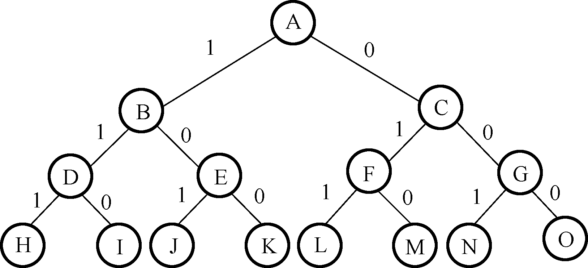
3 个物品的 0-1 背包问题的完全状态空间图
$$
C_s(\boldsymbol{X})=\sum_{i=1}^k x_i w_i
$$
X = [ x 1 , x 2 , ⋯ , x k ] \boldsymbol{X}=\left[x_1, x_2, \cdots, x_k\right] X = [ x 1 , x 2 , ⋯ , x k ] X ′ = [ x k + 1 , x k + 2 , ⋯ , x n ] \boldsymbol{X}^{\prime}=\left[x_{k+1}, x_{k+2}, \cdots, x_n\right] X ′ = [ x k + 1 , x k + 2 , ⋯ , x n ] X s = [ X , X ′ ] \boldsymbol{X}_s=\left[\boldsymbol{X}, \boldsymbol{X}^{\prime}\right] X s = [ X , X ′ ]
V a l ( X s ) = ∑ i = 1 n x i v i = ∑ i = 1 k x i v i + ∑ i = k + 1 n x i v i = V a l ( X ) + V a l ( X ′ ) Val\left(\boldsymbol{X}_s\right)=\sum_{i=1}^n x_i v_i=\sum_{i=1}^k x_i v_i+\sum_{i=k+1}^n x_i v_i=Val(\boldsymbol{X})+Val\left(\boldsymbol{X}^{\prime}\right)
V a l ( X s ) = i = 1 ∑ n x i v i = i = 1 ∑ k x i v i + i = k + 1 ∑ n x i v i = V a l ( X ) + V a l ( X ′ )
令 B d ( X ′ ) = ∑ i = k + 1 n 1 × v i ⩾ V a l ( X ′ ) Bd\left(\boldsymbol{X}^{\prime}\right)=\sum_{i=k+1}^n 1 \times v_i \geqslant Val\left(\boldsymbol{X}^{\prime}\right) B d ( X ′ ) = ∑ i = k + 1 n 1 × v i ⩾ V a l ( X ′ ) n − k n-k n − k
B o u n d ( X s ) = V a l ( X ) + B d ( X ′ ) Bound\left(\boldsymbol{X}_s\right)=Val(\boldsymbol{X})+Bd\left(\boldsymbol{X}^{\prime}\right)
B o u n d ( X s ) = V a l ( X ) + B d ( X ′ )
B o u n d ( X s ) Bound\left(\boldsymbol{X}_s\right) B o u n d ( X s ) V a l ( X s ) Val\left(\boldsymbol{X}_s\right) V a l ( X s )
假设已找到的最优值是 B e s t V BestV B e s t V B o u n d ( X s ) < B e s t V Bound\left(\boldsymbol{X}_s\right) < BestV B o u n d ( X s ) < B e s t V X s \boldsymbol{X}_s X s X \boldsymbol{X} X
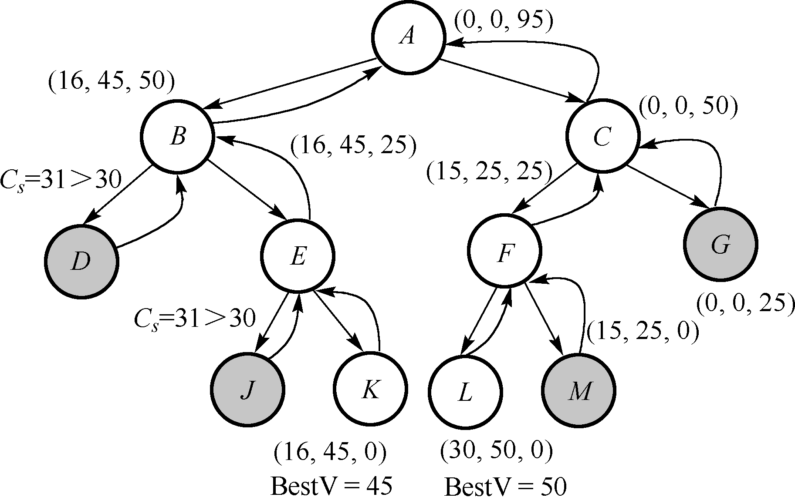
X \boldsymbol{X} X X ′ \boldsymbol{X}^{\prime} X ′ C s ( X ) ⩽ C C_s(\boldsymbol{X}) \leqslant C C s ( X ) ⩽ C V a l ( X ) Val\left(\boldsymbol{X}\right) V a l ( X ) B d ( X ′ ) Bd\left(\boldsymbol{X}^{\prime}\right) B d ( X ′ ) B o u n d ( X s ) Bound\left(\boldsymbol{X}_s\right) B o u n d ( X s ) B e s t V BestV B e s t V
[ ] [] [ ] [ 1 , 1 , 1 ] [1,1,1] [ 1 , 1 , 1 ] 0 0 0 0 0 0 95 95 9 5 95 95 9 5 0 0 0
[ 1 ] [1] [ 1 ] [ 1 , 1 ] [1,1] [ 1 , 1 ] 16 16 1 6 45 45 4 5 50 50 5 0 95 95 9 5
[ 1 , 1 ] [1,1] [ 1 , 1 ] [ 1 ] [1] [ 1 ] 31 31 3 1
[ 1 , 0 ] [1,0] [ 1 , 0 ] [ 1 ] [1] [ 1 ] 16 16 1 6 45 45 4 5 25 25 2 5 65 65 6 5
[ 1 , 0 , 1 ] [1,0,1] [ 1 , 0 , 1 ] [ ] [] [ ] 31 31 3 1 0 0 0
[ 1 , 0 , 0 ] [1,0,0] [ 1 , 0 , 0 ] [ ] [] [ ] 16 16 1 6 45 45 4 5 0 0 0 45 45 4 5 45 45 4 5
[ 0 ] [0] [ 0 ] [ 1 , 1 ] [1,1] [ 1 , 1 ] 0 0 0 0 0 0 50 50 5 0 50 50 5 0
[ 0 , 1 ] [0,1] [ 0 , 1 ] [ 1 ] [1] [ 1 ] 15 15 1 5 25 25 2 5 25 25 2 5 50 50 5 0
[ 0 , 1 , 1 ] [0,1,1] [ 0 , 1 , 1 ] [ ] [] [ ] 30 30 3 0 50 50 5 0 0 0 0 50 50 5 0 50 50 5 0
[ 0 , 1 , 0 ] [0,1,0] [ 0 , 1 , 0 ] [ ] [] [ ] 15 15 1 5 25 25 2 5 0 0 0 25 25 2 5
[ 0 , 0 ] [0,0] [ 0 , 0 ] [ 1 ] [1] [ 1 ] 0 0 0 0 0 0 25 25 2 5 25 25 2 5
旅行商问题
举例：某商人要到若干城市去推销商品，已知各城市之间的旅行费用，他要选定一条从驻地出发，经过每个城市最后回到驻地的路线，使总的费用最少。试构造如下图对应问题实例的最优旅行方案。
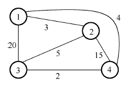
解析：
问题状态 ：
X = [ x 1 , ⋯ , x k ] \boldsymbol{X}=\left[x_1, \cdots, x_k\right]
X = [ x 1 , ⋯ , x k ]
k ⩽ 4 k \leqslant 4 k ⩽ 4 1 , 2 , ⋯ , k 1,2, \cdots, k 1 , 2 , ⋯ , k x i = { 1 , 2 , 3 , 4 } x_i=\{1,2,3,4\} x i = { 1 , 2 , 3 , 4 }
约束条件 ：每个城市最多只能访问一次，x i ≠ x j x_i \neq x_j x i = x j ∀ i ≠ j \forall i \neq j ∀ i = j i , j ∈ { 1 , … , k } i,j \in\{1, \ldots, k\} i , j ∈ { 1 , … , k }
操作符 ：从 n − k n-k n − k
问题解和解空间 ：
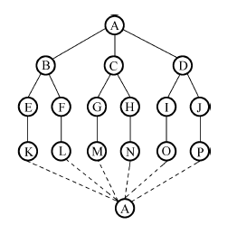
X ′ = [ x 1 , x 2 , ⋯ , x k ] X ′ = [ x k + 1 , x k + 2 , ⋯ , x n ] \boldsymbol{X}^{\prime}=\left[x_1, x_2, \cdots, x_k\right] \ \boldsymbol{X}^{\prime}=\left[x_{k+1}, x_{k+2}, \cdots, x_n\right] X ′ = [ x 1 , x 2 , ⋯ , x k ] X ′ = [ x k + 1 , x k + 2 , ⋯ , x n ]
X s = [ X , X ′ ] \boldsymbol{X}_s=\left[\boldsymbol{X}, \boldsymbol{X}^{\prime}\right] X s = [ X , X ′ ]
V a l ( X s ) = ∑ i = 1 n C ( x i , x i + 1 ) + C ( x n , x 1 ) = ∑ i = 1 k − 1 C ( x i , x i + 1 ) + ∑ i = k n C ( x i , x i + 1 ) + C ( x n , x 1 ) = V a l ( X ) + V a l ( X ′ ) Val\left(\boldsymbol{X}_s\right)=\sum_{i=1}^n C\left(x_i, x_{i+1}\right)+C\left(x_n, x_1\right)=\sum_{i=1}^{k-1} C\left(x_i, x_{i+1}\right)+\sum_{i=k}^n C\left(x_i, x_{i+1}\right)+C\left(x_n, x_1\right)=Val\left(\boldsymbol{X}\right) + Val\left(\boldsymbol{X}^{\prime}\right)
V a l ( X s ) = i = 1 ∑ n C ( x i , x i + 1 ) + C ( x n , x 1 ) = i = 1 ∑ k − 1 C ( x i , x i + 1 ) + i = k ∑ n C ( x i , x i + 1 ) + C ( x n , x 1 ) = V a l ( X ) + V a l ( X ′ )
V a l ( X ′ ) ⩾ 0 Val\left(\boldsymbol{X}^{\prime}\right) \geqslant 0 V a l ( X ′ ) ⩾ 0
V a l ( X s ) ⩾ V a l ( X ) Val\left(\boldsymbol{X}_s\right) \geqslant Val\left(\boldsymbol{X}\right)
V a l ( X s ) ⩾ V a l ( X )
B o u n d ( X s ) = V a l ( X ) Bound\left(\boldsymbol{X}_s\right)=Val\left(\boldsymbol{X}\right)
B o u n d ( X s ) = V a l ( X )
假设已找到的最优值是 B e s t V BestV B e s t V B o u n d ( X s ) ⩾ B e s t V Bound\left(\boldsymbol{X}_s\right) \geqslant BestV B o u n d ( X s ) ⩾ B e s t V X s \boldsymbol{X}_s X s X \boldsymbol{X} X
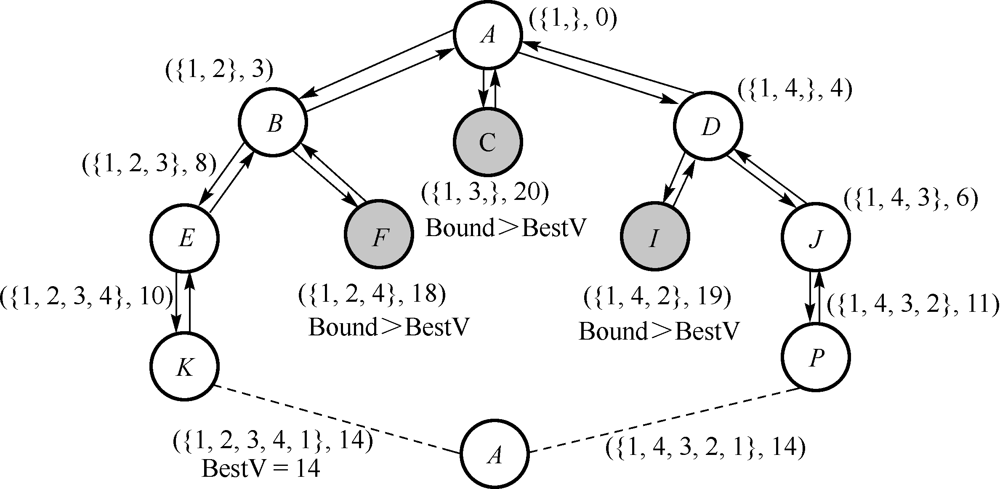
序号
X \boldsymbol{X} X V a l ( X ) Val\left(\boldsymbol{X}\right) V a l ( X ) V a l ( X s ) Val\left(\boldsymbol{X}_s\right) V a l ( X s ) B e s t V BestV B e s t V
A A A { 1 } \{1\} { 1 } 0 0 0 + ∞ + \infty + ∞
B B B { 1 , 2 } \{1,2\} { 1 , 2 } 3 3 3
E E E { 1 , 2 , 3 } \{1,2,3\} { 1 , 2 , 3 } 8 8 8
K K K { 1 , 2 , 3 , 4 } \{1,2,3,4\} { 1 , 2 , 3 , 4 } 10 10 1 0 14 14 1 4 14 14 1 4
F F F { 1 , 2 , 4 } \{1,2,4\} { 1 , 2 , 4 } 18 18 1 8
C C C { 1 , 3 } \{1,3\} { 1 , 3 } 20 20 2 0
D D D { 1 , 4 } \{1,4\} { 1 , 4 } 4 4 4
I I I { 1 , 4 , 2 } \{1,4,2\} { 1 , 4 , 2 } 19 19 1 9
J J J { 1 , 4 , 3 } \{1,4,3\} { 1 , 4 , 3 } 6 6 6
P P P { 1 , 4 , 3 , 2 } \{1,4,3,2\} { 1 , 4 , 3 , 2 } 11 11 1 1 14 14 1 4 14 14 1 4
🌟
1 2 3 4 5 6 7 8 9 10 void backtrack (int t) if (t > n) output (x); else for (int i = Init (n, t); i <= Last (n, t); i++) { x[t] = Node (i); if (constraint (x) && bound (x)) backtrack (t + 1 ); } }
装载问题
题目描述
有 n n n 2 2 2 C 1 C_1 C 1 C 2 C_2 C 2 i i i w i w_i w i ∑ w i ⩽ C 1 + C 2 \sum w_i \leqslant C_1+C_2 ∑ w i ⩽ C 1 + C 2 2 2 2
输入数据
多组测试数据。每组测试数据包括两行：
第一行输入集装箱数目 n （ n < 1000 ） n（n<1000） n （ n < 1 0 0 0 ） C 1 C_1 C 1 C 2 C_2 C 2
第二行输入 n n n
输出数据
如果存在合理装载方案，输出第一艘轮船的最大装载重量；否则，输出“No \text {No} No
样例输入
1 2 3 4 3 50 50 10 40 40 3 50 50 20 40 40
样例输出
问题分析
将第一艘轮船尽可能装满；
将剩余的集装箱装上第二艘轮船。
max ∑ i = 1 n w i x i st. { ∑ i = 1 n w i x i ⩽ C 1 x i ∈ { 0 , 1 } , 1 ⩽ i ⩽ n \begin{aligned}
& \max \sum_{i=1}^n w_i x_i \\
& \text { st. }\left\{\begin{array}{l}
\sum_{i=1}^n w_i x_i \leqslant C_1 \\
x_i \in\{0,1\}, 1 \leqslant i \leqslant n
\end{array}\right.
\end{aligned}
max i = 1 ∑ n w i x i st. { ∑ i = 1 n w i x i ⩽ C 1 x i ∈ { 0 , 1 } , 1 ⩽ i ⩽ n
算法实现与分析
问题状态 ：
X = [ x 1 , ⋯ , x k ] \boldsymbol{X}=\left[x_1, \cdots, x_k\right]
X = [ x 1 , ⋯ , x k ]
1 ⩽ k ⩽ n 1 \leqslant k \leqslant n 1 ⩽ k ⩽ n 1 , 2 , ⋯ , k 1,2, \cdots, k 1 , 2 , ⋯ , k x i = { 0 , 1 } x_i=\{0,1\} x i = { 0 , 1 }
约束条件 ：
∑ i = 1 k x i w i ⩽ C 1 \sum_{i=1}^k x_i w_i \leqslant C_1
i = 1 ∑ k x i w i ⩽ C 1
操作符 ：
第 k + 1 k+1 k + 1 C 1 C_1 C 1 x k + 1 = 1 x_{k+1}=1 x k + 1 = 1
第 k + 1 k+1 k + 1 C 1 C_1 C 1 x k + 1 = 0 x_{k+1}=0 x k + 1 = 0
得到新的问题状态：
X ′ = [ x 1 , x 2 , ⋯ , x k , x k + 1 ] \boldsymbol{X}^{\prime}=\left[x_1, x_2, \cdots, x_k, x_{k+1}\right]
X ′ = [ x 1 , x 2 , ⋯ , x k , x k + 1 ]
问题解和解空间 ：
1 2 3 4 5 6 7 8 9 10 11 12 13 14 15 16 17 18 19 20 21 22 23 24 25 26 27 28 29 30 31 32 33 34 35 36 37 38 39 40 41 42 43 44 45 46 47 48 #include <iostream> #include <cstdio> #include <cmath> #define MaxBox 1000 int num;int C1, C2;int weight[MaxBox];int status[MaxBox];int totalWeight = 0 ;int maxWeight = 0 ;void DFS (int ) void DFS (int depth) if (depth == num) { int sumWeight = 0 ; for (int i = 0 ; i < num; i++) sumWeight += status[i] * weight[i]; if ((sumWeight <= C1) && sumWeight > maxWeight) maxWeight = sumWeight; return ; } status[depth] = 1 ; DFS (depth + 1 ); status[depth] = 0 ; DFS (depth + 1 ); } int main () while (scanf ("%d %d %d" , &num, &C1, &C2) != EOF) { for (int i = 0 ; i < num; i++) { scanf ("%d" , &weight[i]); totalWeight += weight[i]; } DFS (0 ); if (totalWeight - maxWeight <= C2) printf ("%d\n" , maxWeight); else printf ("No\n" ); } return 0 ; }
D F S ( 0 ) DFS(0) D F S ( 0 )
添加剪枝策略：
约束函数剪枝 ：不合法状态，∑ i = 1 k x i w i > C 1 \sum_{i=1}^k x_i w_i > C_1 ∑ i = 1 k x i w i > C 1 递归搜索右子树之前不需要约束测试 。限界函数剪枝 ：递归搜索左子树之前不需要限界测试 。
C s ( X ) = ∑ i = 1 k x i w i C_s(\boldsymbol{X})=\sum_{i=1}^k x_i w_i
C s ( X ) = i = 1 ∑ k x i w i
X ′ = [ x 1 , x 2 , ⋯ , x k ] X ′ = [ x k + 1 , x k + 2 , ⋯ , x n ] \boldsymbol{X}^{\prime}=\left[x_1, x_2, \cdots, x_k\right] \ \boldsymbol{X}^{\prime}=\left[x_{k+1}, x_{k+2}, \cdots, x_n\right] X ′ = [ x 1 , x 2 , ⋯ , x k ] X ′ = [ x k + 1 , x k + 2 , ⋯ , x n ]
X s = [ X , X ′ ] \boldsymbol{X}_s=\left[\boldsymbol{X}, \boldsymbol{X}^{\prime}\right] X s = [ X , X ′ ]
V a l ( X s ) = ∑ i = 1 n x i w i = ∑ i = 1 k x i w i + ∑ i = k + 1 n x i w i = V a l ( X ) + V a l ( X ′ ) Val\left(\boldsymbol{X}_s\right)=\sum_{i=1}^n x_i w_i=\sum_{i=1}^k x_i w_i+\sum_{i=k+1}^n x_i w_i=Val(\boldsymbol{X})+Val\left(\boldsymbol{X}^{\prime}\right)
V a l ( X s ) = i = 1 ∑ n x i w i = i = 1 ∑ k x i w i + i = k + 1 ∑ n x i w i = V a l ( X ) + V a l ( X ′ )
令 B d ( X ′ ) = ∑ i = k + 1 n 1 × w i ⩾ V a l ( X ′ ) Bd\left(\boldsymbol{X}^{\prime}\right)=\sum_{i=k+1}^n 1 \times w_i \geqslant Val\left(\boldsymbol{X}^{\prime}\right) B d ( X ′ ) = ∑ i = k + 1 n 1 × w i ⩾ V a l ( X ′ ) n − k n-k n − k C 1 C_1 C 1
B o u n d ( X s ) = V a l ( X ) + B d ( X ′ ) Bound\left(\boldsymbol{X}_s\right)=Val(\boldsymbol{X})+Bd\left(\boldsymbol{X}^{\prime}\right)
B o u n d ( X s ) = V a l ( X ) + B d ( X ′ )
B o u n d ( X s ) Bound\left(\boldsymbol{X}_s\right) B o u n d ( X s ) V a l ( X s ) Val\left(\boldsymbol{X}_s\right) V a l ( X s )
假设已找到的最优值是 B e s t V BestV B e s t V B o u n d ( X s ) < B e s t V Bound\left(\boldsymbol{X}_s\right) < BestV B o u n d ( X s ) < B e s t V X s \boldsymbol{X}_s X s X \boldsymbol{X} X
1 2 3 4 5 6 7 8 9 10 11 12 13 14 15 16 17 18 19 20 21 22 23 24 25 26 27 28 29 30 31 32 33 34 35 36 37 38 39 40 41 42 43 44 45 46 47 48 49 50 51 52 53 54 55 56 57 58 #include <iostream> #include <cstdio> #include <cmath> #define MaxN 1000 int num;int C1, C2;int weight[MaxN];int status[MaxN];int totalWeight = 0 ;int maxWeight = 0 ;int mW = 0 ;int Bd;void Backtrack (int ) void Backtrack (int depth) if (depth == num) { maxWeight = mW; return ; } Bd -= weight[depth]; if (mW + weight[depth] <= C1) { status[depth] = 1 ; mW += weight[depth]; Backtrack (depth + 1 ); mW -= weight[depth]; } if (mW + Bd > maxWeight) { status[depth] = 0 ; Backtrack (depth + 1 ); } Bd += weight[depth]; } int main () while (scanf ("%d %d %d" , &num, &C1, &C2) != EOF) { for (int i = 0 ; i < num; i++) { scanf ("%d" , &weight[i]); totalWeight += weight[i]; } Bd = totalWeight; Backtrack (0 ); if (totalWeight - maxWeight <= C2) printf ("%d\n" , maxWeight); else printf ("No\n" ); } return 0 ; }
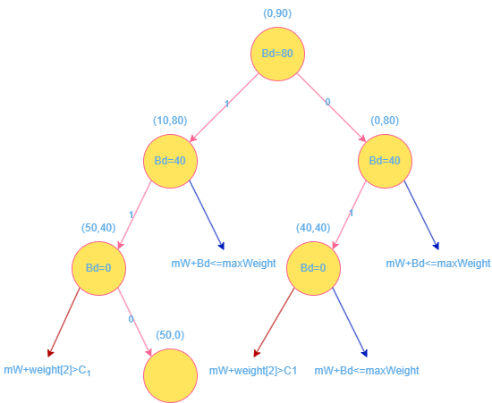
圆排列问题
题目描述
给定 n n n C 1 , C 2 , ⋯ , C n C_1, C_2, \cdots, C_n C 1 , C 2 , ⋯ , C n n n n n n n
输入数据
多组测试数据，每组测试数据包括两行：
第一行输入圆的个数 n ( n < 1000 ) n(n<1000) n ( n < 1 0 0 0 )
第二行输入 n n n
输出数据
最小长度圆排列的长度，保留小数点后 n n n
样例输入
样例输出
问题分析
问题状态 ：
X = [ x 1 , ⋯ , x k ] \boldsymbol{X}=\left[x_1, \cdots, x_k\right]
X = [ x 1 , ⋯ , x k ]
1 ⩽ k ⩽ n 1 \leqslant k \leqslant n 1 ⩽ k ⩽ n 1 , 2 , ⋯ , k 1,2, \cdots, k 1 , 2 , ⋯ , k x i = { 1 , 2 , ⋯ , n − 1 , n } x_i=\{1,2,\cdots,n-1,n\} x i = { 1 , 2 , ⋯ , n − 1 , n }
约束条件 ：每个圆最多只能出现一次，x i ≠ x j x_i \neq x_j x i = x j ∀ i ≠ j \forall i \neq j ∀ i = j i , j ∈ { 1 , … , k } i,j \in\{1, \ldots, k\} i , j ∈ { 1 , … , k }
操作符 ：从 n − k n-k n − k
得到新的问题状态：
X ′ = [ x 1 , x 2 , ⋯ , x k , x k + 1 ] \boldsymbol{X}^{\prime}=\left[x_1, x_2, \cdots, x_k, x_{k+1}\right]
X ′ = [ x 1 , x 2 , ⋯ , x k , x k + 1 ]
问题解和解空间 ：
X ′ = [ x 1 , x 2 , ⋯ , x k ] X ′ = [ x k + 1 , x k + 2 , ⋯ , x n ] \boldsymbol{X}^{\prime}=\left[x_1, x_2, \cdots, x_k\right] \ \boldsymbol{X}^{\prime}=\left[x_{k+1}, x_{k+2}, \cdots, x_n\right] X ′ = [ x 1 , x 2 , ⋯ , x k ] X ′ = [ x k + 1 , x k + 2 , ⋯ , x n ]
X s = [ X , X ′ ] \boldsymbol{X}_s=\left[\boldsymbol{X}, \boldsymbol{X}^{\prime}\right] X s = [ X , X ′ ]
V a l ( X s ) = V a l ( X ) + V a l ( X ′ ) Val\left(\boldsymbol{X}_s\right)=Val\left(\boldsymbol{X}\right) + Val\left(\boldsymbol{X}^{\prime}\right)
V a l ( X s ) = V a l ( X ) + V a l ( X ′ )
V a l ( X ′ ) ⩾ 0 Val\left(\boldsymbol{X}^{\prime}\right) \geqslant 0 V a l ( X ′ ) ⩾ 0
V a l ( X s ) ⩾ V a l ( X ) Val\left(\boldsymbol{X}_s\right) \geqslant Val\left(\boldsymbol{X}\right)
V a l ( X s ) ⩾ V a l ( X )
B o u n d ( X s ) = V a l ( X ) Bound\left(\boldsymbol{X}_s\right)=Val\left(\boldsymbol{X}\right)
B o u n d ( X s ) = V a l ( X )
假设已找到的最优值是 B e s t V BestV B e s t V B o u n d ( X s ) ⩾ B e s t V Bound\left(\boldsymbol{X}_s\right) \geqslant BestV B o u n d ( X s ) ⩾ B e s t V X s \boldsymbol{X}_s X s X \boldsymbol{X} X
❗ ( x 1 , y 1 ) = ( 0 , r 1 ) (x_1,y_1)=(0,r_1) ( x 1 , y 1 ) = ( 0 , r 1 )
第一个圆未必决定左边界，最后一个圆未必决定右边界
左边界 L L L L = min i = 1 n ( x i − r i ) L=\min _{i=1}^n\left(x_i-r_i\right) L = min i = 1 n ( x i − r i )
右边界 R R R R = max i = 1 n ( x i + r i ) R=\max _{i=1}^n\left(x_i+r_i\right) R = max i = 1 n ( x i + r i )
1 2 3 4 5 6 7 8 9 10 11 12 13 void permLength () double high = 0 , low = 0 ; for (int i = 0 ; i < num; i++) { if (centerX[i] + radius[i] > high) high = centerX[i] + radius[i]; if (centerX[i] - radius[i] < low) low = centerX[i] - radius[i]; } if (high - low < min) min = high - low; }
第 i + 1 i+1 i + 1 i i i
两圆相切，圆心之间的距离公式：( x i − x j ) 2 + ( y i − y j ) 2 = ( r i + r j ) 2 \left(x_i-x_j\right)^2+\left(y_i-y_j\right)^2=\left(r_i+r_j\right)^2 ( x i − x j ) 2 + ( y i − y j ) 2 = ( r i + r j ) 2
第 i i i
假定第 i i i ( x i , y i ) (x_i,y_i) ( x i , y i ) i − 1 i-1 i − 1 C i r c l e k ( 1 ⩽ k ⩽ i − 1 ) Circle_k(1 \leqslant k \leqslant i-1) C i r c l e k ( 1 ⩽ k ⩽ i − 1 ) ( x k , y k ) (x_k,y_k) ( x k , y k )
( x i − x k ) 2 = ( r i + r k ) 2 − ( y i − y k ) 2 \left(x_i-x_k\right)^2=\left(r_i+r_k\right)^2-\left(y_i-y_k\right)^2
( x i − x k ) 2 = ( r i + r k ) 2 − ( y i − y k ) 2
x i − x k = ± ( r i + r k ) 2 − ( y i − y k ) 2 x_i-x_k= \pm \sqrt{\left(r_i+r_k\right)^2-\left(y_i-y_k\right)^2}
x i − x k = ± ( r i + r k ) 2 − ( y i − y k ) 2
又 x i > x k x_i > x_k x i > x k
x i − x k = ( r i + r k ) 2 − ( y i − y k ) 2 x_i-x_k=\sqrt{\left(r_i+r_k\right)^2-\left(y_i-y_k\right)^2}
x i − x k = ( r i + r k ) 2 − ( y i − y k ) 2
又 y i = r i y_i=r_i y i = r i y k = r k y_k=r_k y k = r k
x i − x k = ( r i + r k ) 2 − ( r i − r k ) 2 x_i-x_k=\sqrt{\left(r_i+r_k\right)^2-\left(r_i-r_k\right)^2}
x i − x k = ( r i + r k ) 2 − ( r i − r k ) 2
x i = x k + 2 r k r i x_i=x_k + 2 \sqrt{r_kr_i}
x i = x k + 2 r k r i
1 2 3 4 5 6 7 8 9 10 11 double curCenter (int depth) double temp = radius[depth] - radius[0 ]; for (int k = 0 ; k < depth; k++) { double valuex = centerX[k] + 2.0 * sqrt (radius[k] * radius[depth]); if (valuex > temp) temp = valuex; } return temp; }
算法实现与分析
1 2 3 4 5 6 7 8 9 10 11 12 13 14 15 16 17 18 19 20 21 22 23 24 25 26 27 28 29 30 31 32 33 34 35 36 37 38 39 40 41 42 43 44 45 46 47 48 49 50 51 52 53 54 55 56 57 58 59 60 61 62 63 64 65 66 67 68 69 70 71 72 73 74 75 76 77 78 79 80 81 82 83 84 85 86 87 #include <iostream> #include <cstdio> #include <cmath> #define MaxN 1000 #define INF 0x03F3F3F3F int num;double radius[MaxN];double centerX[MaxN];double min;double curCenter (int depth) void permLength () void swap (double &circleA, double &circleB) void Backtrack (int ) double curCenter (int depth) double temp = radius[depth] - radius[0 ]; for (int k = 0 ; k < depth; k++) { double valuex = centerX[k] + 2.0 * sqrt (radius[k] * radius[depth]); if (valuex > temp) temp = valuex; } return temp; } void permLength () double high = 0 , low = 0 ; for (int i = 0 ; i < num; i++) { if (centerX[i] + radius[i] > high) high = centerX[i] + radius[i]; if (centerX[i] - radius[i] < low) low = centerX[i] - radius[i]; } if (high - low < min) min = high - low; } void swap (double &circleA, double &circleB) double temp = circleA; circleA = circleB; circleB = temp; } void Backtrack (int depth) if (depth == num) { permLength (); return ; } else { for (int i = depth; i < num; i++) { swap (radius[depth], radius[i]); double centerx = curCenter (depth); if (centerx + radius[depth] + radius[0 ] < min) { centerX[depth] = centerx; Backtrack (depth + 1 ); } swap (radius[depth], radius[i]); } } } int main () while (scanf ("%d" , &num) != EOF) { for (int i = 0 ; i < num; i++) { scanf ("%lf" , &radius[i]); centerX[i] = 0 ; } min = INF; Backtrack (0 ); printf ("%.4f\n" , min); } return 0 ; }
分支限界
分支限界法 ：首先将根结点加入活结点表中，从活结点表中取出首节点作为当前拓展结点，一次性生成所有孩子结点，判断孩子结点是舍弃还是保留（舍弃不可能导致可行解或最优解的孩子结点）在活结点表中。继续从活结点表中取出首节点作为当前结点，重复上述过程，直到找到问题的解或活结点表为空。
在此过程中，每一个活结点最多只有一次机会成为扩展结点。
🌟
1 2 3 4 5 6 7 8 9 10 11 12 13 14 15 16 function BranchBound (problem, stack) { node = Make-Node (Initial-State[problem]); queue <- Insert(node, stack); do while (1) { if queue == Empty return failure; node <- Remove-First(queue); visit(node); if State[node] == Goal return Solution(node) while ((sonNodes = Next(problem,node)) != NULL ) if （constraint(sonNode) && bound(sonNode)) Insert(sonNode, queue) } return ; }
0-1 背包问题
举例：对于n = 3 n=3 n = 3 0 − 1 0-1 0 − 1 c = 30 c=30 c = 3 0 w = ⟨ 16 , 15 , 15 ⟩ w=\langle 16,15,15\rangle w = ⟨ 1 6 , 1 5 , 1 5 ⟩ p = ⟨ 45 , 25 , 25 ⟩ p=\langle 45,25,25\rangle p = ⟨ 4 5 , 2 5 , 2 5 ⟩
解析：
问题状态 ：
X = [ x 1 , ⋯ , x k ] \boldsymbol{X}=\left[x_1, \cdots, x_k\right]
X = [ x 1 , ⋯ , x k ]
1 ⩽ k ⩽ 3 1 \leqslant k \leqslant 3 1 ⩽ k ⩽ 3 1 , 2 , ⋯ , k 1,2, \cdots, k 1 , 2 , ⋯ , k x i = { 0 , 1 } x_i=\{0,1\} x i = { 0 , 1 } 1 1 1 i i i
约束条件 ：
∑ i = 1 k x i w i ⩽ C \sum_{i=1}^k x_i w_i \leqslant C
i = 1 ∑ k x i w i ⩽ C
操作符 ：
第 k + 1 k+1 k + 1 x k + 1 = 1 x_{k+1}=1 x k + 1 = 1
第 k + 1 k+1 k + 1 x k + 1 = 0 x_{k+1}=0 x k + 1 = 0
得到新的问题状态：
X ′ = [ x 1 , x 2 , ⋯ , x k , x k + 1 ] \boldsymbol{X}^{\prime}=\left[x_1, x_2, \cdots, x_k, x_{k+1}\right]
X ′ = [ x 1 , x 2 , ⋯ , x k , x k + 1 ]
问题解和解空间 ：
3 个物品的 0-1 背包问题的完全状态空间图
C s ( X ) = ∑ i = 1 k x i w i C_s(\boldsymbol{X})=\sum_{i=1}^k x_i w_i
C s ( X ) = i = 1 ∑ k x i w i
X ′ = [ x 1 , x 2 , ⋯ , x k ] X ′ = [ x k + 1 , x k + 2 , ⋯ , x n ] \boldsymbol{X}^{\prime}=\left[x_1, x_2, \cdots, x_k\right] \ \boldsymbol{X}^{\prime}=\left[x_{k+1}, x_{k+2}, \cdots, x_n\right] X ′ = [ x 1 , x 2 , ⋯ , x k ] X ′ = [ x k + 1 , x k + 2 , ⋯ , x n ]
X s = [ X , X ′ ] \boldsymbol{X}_s=\left[\boldsymbol{X}, \boldsymbol{X}^{\prime}\right] X s = [ X , X ′ ]
V a l ( X s ) = ∑ i = 1 n x i v i = ∑ i = 1 k x i v i + ∑ i = k + 1 n x i v i = V a l ( X ) + V a l ( X ′ ) Val\left(\boldsymbol{X}_s\right)=\sum_{i=1}^n x_i v_i=\sum_{i=1}^k x_i v_i+\sum_{i=k+1}^n x_i v_i=Val(\boldsymbol{X})+Val\left(\boldsymbol{X}^{\prime}\right)
V a l ( X s ) = i = 1 ∑ n x i v i = i = 1 ∑ k x i v i + i = k + 1 ∑ n x i v i = V a l ( X ) + V a l ( X ′ )
令 B d ( X ′ ) = ∑ i = k + 1 n 1 × v i ⩾ V a l ( X ′ ) Bd\left(\boldsymbol{X}^{\prime}\right)=\sum_{i=k+1}^n 1 \times v_i \geqslant Val\left(\boldsymbol{X}^{\prime}\right) B d ( X ′ ) = ∑ i = k + 1 n 1 × v i ⩾ V a l ( X ′ ) n − k n-k n − k
B o u n d ( X s ) = V a l ( X ) + B d ( X ′ ) Bound\left(\boldsymbol{X}_s\right)=Val(\boldsymbol{X})+Bd\left(\boldsymbol{X}^{\prime}\right)
B o u n d ( X s ) = V a l ( X ) + B d ( X ′ )
B o u n d ( X s ) Bound\left(\boldsymbol{X}_s\right) B o u n d ( X s ) V a l ( X s ) Val\left(\boldsymbol{X}_s\right) V a l ( X s )
假设已找到的最优值是 B e s t V BestV B e s t V B o u n d ( X s ) < B e s t V Bound\left(\boldsymbol{X}_s\right) < BestV B o u n d ( X s ) < B e s t V X s \boldsymbol{X}_s X s X \boldsymbol{X} X
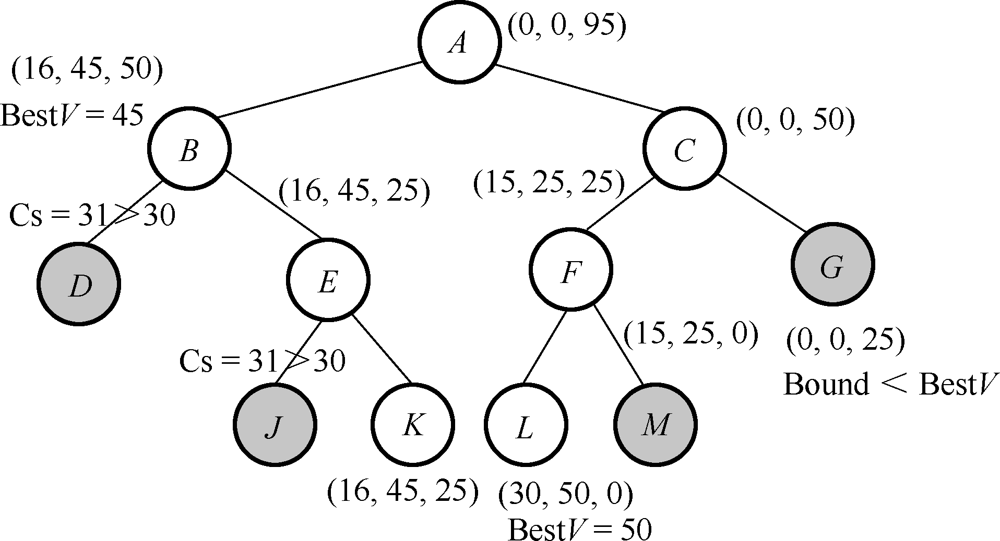
装载问题
装载问题的广度优先搜索算法程序：
1 2 3 4 5 6 7 8 9 10 11 12 13 14 15 16 17 18 19 20 21 22 23 24 25 26 27 28 29 30 31 32 33 34 35 36 37 38 39 40 41 42 43 44 45 46 47 48 49 50 51 52 53 54 55 56 57 58 59 60 61 62 63 64 65 #include <iostream> #include <cstdio> #include <cmath> #include <queue> #define MaxN 1000 struct node { int id; int weight; }; int num;int C1, C2;int weight[MaxN];int totalWeight = 0 ;int maxWeight = 0 ;std::queue<node> nodeQueue; void BFS () void BFS () node headNode, sonNode; headNode.weight = 0 ; headNode.id = -1 ; nodeQueue.push (headNode); while (!nodeQueue.empty ()) { headNode = nodeQueue.front (); if (headNode.id == num) { if ((headNode.weight <= C1) && (headNode.weight > maxWeight)) maxWeight = headNode.weight; } else { sonNode.id = headNode.id + 1 ; sonNode.weight = headNode.weight + weight[sonNode.id]; nodeQueue.push (sonNode); sonNode.weight = headNode.weight; nodeQueue.push (sonNode); } nodeQueue.pop (); } } int main () while (scanf ("%d %d %d" , &num, &C1, &C2) != EOF) { for (int i = 0 ; i < num; i++) { scanf ("%d" , &weight[i]); totalWeight += weight[i]; } BFS (); if (totalWeight - maxWeight <= C2) printf ("%d\n" , maxWeight); else printf ("No\n" ); } return 0 ; }
添加剪枝策略：
约束函数剪枝 ：不合法状态，∑ i = 1 k x i w i > C 1 \sum_{i=1}^k x_i w_i > C_1 ∑ i = 1 k x i w i > C 1 递归搜索右子树之前不需要约束测试 。限界函数剪枝 ：递归搜索左子树之前不需要限界测试 。
C s ( X ) = ∑ i = 1 k x i w i C_s(\boldsymbol{X})=\sum_{i=1}^k x_i w_i
C s ( X ) = i = 1 ∑ k x i w i
X = [ x 1 , x 2 , ⋯ , x k ] \boldsymbol{X}=\left[x_1, x_2, \cdots, x_k\right] X = [ x 1 , x 2 , ⋯ , x k ] X ′ = [ x k + 1 , x k + 2 , ⋯ , x n ] \boldsymbol{X}^{\prime}=\left[x_{k+1}, x_{k+2}, \cdots, x_n\right] X ′ = [ x k + 1 , x k + 2 , ⋯ , x n ] X s = [ X , X ′ ] \boldsymbol{X}_s=\left[\boldsymbol{X}, \boldsymbol{X}^{\prime}\right] X s = [ X , X ′ ]
V a l ( X s ) = ∑ i = 1 n x i w i = ∑ i = 1 k x i w i + ∑ i = k + 1 n x i w i = V a l ( X ) + V a l ( X ′ ) Val\left(\boldsymbol{X}_s\right)=\sum_{i=1}^n x_i w_i=\sum_{i=1}^k x_i w_i+\sum_{i=k+1}^n x_i w_i=Val(\boldsymbol{X})+Val\left(\boldsymbol{X}^{\prime}\right)
V a l ( X s ) = i = 1 ∑ n x i w i = i = 1 ∑ k x i w i + i = k + 1 ∑ n x i w i = V a l ( X ) + V a l ( X ′ )
令 B d ( X ′ ) = ∑ i = k + 1 n 1 × w i ⩾ V a l ( X ′ ) Bd\left(\boldsymbol{X}^{\prime}\right)=\sum_{i=k+1}^n 1 \times w_i \geqslant Val\left(\boldsymbol{X}^{\prime}\right) B d ( X ′ ) = ∑ i = k + 1 n 1 × w i ⩾ V a l ( X ′ ) n − k n-k n − k C 1 C_1 C 1
B o u n d ( X s ) = V a l ( X ) + B d ( X ′ ) Bound\left(\boldsymbol{X}_s\right)=Val(\boldsymbol{X})+Bd\left(\boldsymbol{X}^{\prime}\right)
B o u n d ( X s ) = V a l ( X ) + B d ( X ′ )
B o u n d ( X s ) Bound\left(\boldsymbol{X}_s\right) B o u n d ( X s ) V a l ( X s ) Val\left(\boldsymbol{X}_s\right) V a l ( X s )
假设已找到的最优值是 B e s t V BestV B e s t V B o u n d ( X s ) < B e s t V Bound\left(\boldsymbol{X}_s\right) < BestV B o u n d ( X s ) < B e s t V X s \boldsymbol{X}_s X s X \boldsymbol{X} X
装载问题的分支限界算法程序：
1 2 3 4 5 6 7 8 9 10 11 12 13 14 15 16 17 18 19 20 21 22 23 24 25 26 27 28 29 30 31 32 33 34 35 36 37 38 39 40 41 42 43 44 45 46 47 48 49 50 51 52 53 54 55 56 57 58 59 60 61 62 63 64 65 66 67 68 69 70 71 72 73 #include <iostream> #include <cstdio> #include <cmath> #include <queue> #define MaxN 1000 struct node { int id; int weight; int bd; }; int num;int C1, C2;int weight[MaxN];int totalWeight = 0 ;int maxWeight = 0 ;std::queue<node> nodeQueue; void BranchBound () void BranchBound () node headNode, sonNode; headNode.id = -1 ; headNode.weight = 0 ; headNode.bd = totalWeight; nodeQueue.push (headNode); while (!nodeQueue.empty ()) { headNode = nodeQueue.front (); if (headNode.id == num) { if ((headNode.weight <= C1) && (headNode.weight > maxWeight)) maxWeight = headNode.weight; } else { sonNode.id = headNode.id + 1 ; sonNode.weight = headNode.weight + weight[sonNode.id]; sonNode.bd = headNode.bd - weight[sonNode.id]; if (sonNode.weight <= C1) { nodeQueue.push (sonNode); maxWeight = sonNode.weight; } sonNode.weight = headNode.weight; if (sonNode.weight + sonNode.bd > maxWeight) nodeQueue.push (sonNode); } nodeQueue.pop (); } } int main () while (scanf ("%d %d %d" , &num, &C1, &C2) != EOF) { for (int i = 0 ; i < num; i++) { scanf ("%d" , &weight[i]); totalWeight += weight[i]; } BranchBound (); if (totalWeight - maxWeight <= C2) printf ("%d\n" , maxWeight); else printf ("No\n" ); } return 0 ; }
启发式搜索
评估函数 f f f
f ( n ) = g ( n ) + h ( n ) f(n)=g(n)+h(n)
f ( n ) = g ( n ) + h ( n )
f ( n ) f(n) f ( n ) n n n g ( n ) g(n) g ( n ) n n n h ( n ) h(n) h ( n ) n n n
h ∗ ( n ) h^*(n) h ∗ ( n ) n n n
A A A
A ∗ A^{*} A ∗ h ( n ) ⩽ h ∗ ( n ) h(n) \leqslant h^*(n) h ( n ) ⩽ h ∗ ( n )
相关定理：
定理 1 \text {1} 1 h ( n ) h(n) h ( n )
图中的每个结点的后继结点是有限的。
图中的弧的代价都大于某个正数 ε \varepsilon ε
对图中的所有结点 n n n h ( n ) ⩽ h ∗ ( n ) h(n) \leqslant h^*(n) h ( n ) ⩽ h ∗ ( n )
并且状态空间图中存在一条从开始结点 s s s g g g A ∗ A^* A ∗ s s s g g g A ∗ A^* A ∗
定理 2 \text {2} 2 n n n n ′ n^{\prime} n ′ h ( n ) ⩽ h ( n ′ ) + c ( n , n ′ ) h(n) \leqslant h\left(n^{\prime}\right)+c\left(n, n^{\prime}\right) h ( n ) ⩽ h ( n ′ ) + c ( n , n ′ ) c ( n , n ′ ) c\left(n, n^{\prime}\right) c ( n , n ′ ) n n n n ′ n^{\prime} n ′ h h h A ∗ A^* A ∗ n n n n n n
定理 3 \text {3} 3 A ∗ A^* A ∗ A 2 \mathrm{A}_2 A 2 A 1 \mathrm{A}_1 A 1 h 1 < h 2 h_1<h_2 h 1 < h 2 A 2 \mathrm{A}_2 A 2 A 1 \mathrm{A}_1 A 1 s s s A 2 \mathrm{A}_2 A 2 A 1 \mathrm{A}_1 A 1
定理
作用
定理 1 \text {1} 1
可行性
定理 2 \text {2} 2
单调性
定理 3 \text {3} 3
性能比较
启发式搜索 ：维护 Open \text {Open} Open Closed \text {Closed} Closed Open \text {Open} Open Open \text {Open} Open Open \text {Open} Open Closed \text {Closed} Closed Open \text {Open} Open
1 2 3 4 5 6 7 8 9 10 11 12 13 14 15 16 17 18 19 20 21 22 23 24 25 26 27 28 HeuristicSearch (){ Open = [初始状态节点]; Closed = []; while (Open 集非空) { 从 Open 中取得一个节点 X，并从 OPEN 集中删除。 if (X 是目标状态) { 寻得路径 PATH; 返回路径 PATH; } for (每一个 X 的合法子节点 Y) { if (Y 不在 OPEN 集和 CLOSED 集中) { 设置 Y 的估价值; 将 Y 插入 OPEN 集中; } else if (Y 在 OPEN 集中) { if (Y 的估价值小于 OPEN 集的估价值) { 更新 OPEN 集中的估价值; } } else { if (Y 的估价值小于 CLOSED 集的估价值) { 更新 CLOSED 集中的估价值; 将 CLOSED 集中移出节点，插入到 OPEN 集; } } } 将 X 插入到 CLOSED 集中; 按估价值递减 OPEN 集中的节点排序; } }
八数码问题
举例：在一个 3 × 3 3 \times 3 3 × 3 1 ∼ 8 1 \sim 8 1 ∼ 8 a ⇒ b \text {a} \Rightarrow b a ⇒ b
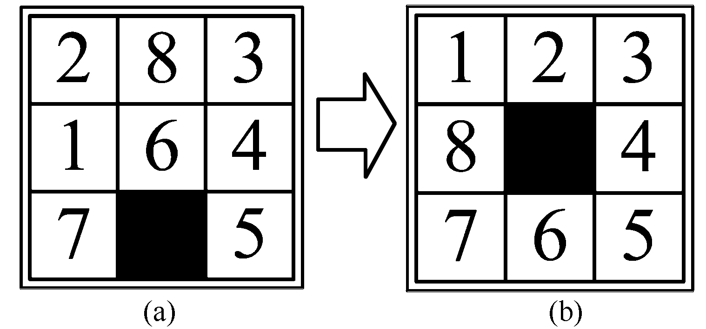
解析：
评估函数：
f ( n ) = g ( n ) + h ( n ) f(n)=g(n)+h(n)
f ( n ) = g ( n ) + h ( n )
g ( n ) g(n) g ( n ) n n n h ( n ) h(n) h ( n ) n n n
假设 h ∗ ( n ) h^*(n) h ∗ ( n ) n n n
易得 h ( n ) ⩽ h ∗ ( n ) h(n) \leqslant h^*(n) h ( n ) ⩽ h ∗ ( n )
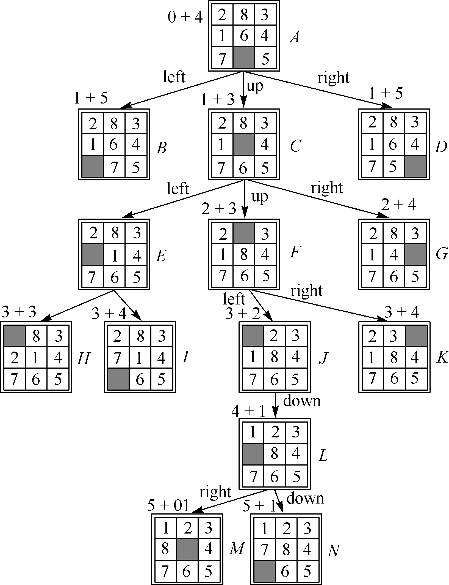
八数码问题的启发式搜索过程示意图
装载问题
装载问题启发式搜索算法程序：
1 2 3 4 5 6 7 8 9 10 11 12 13 14 15 16 17 18 19 20 21 22 23 24 25 26 27 28 29 30 31 32 33 34 35 36 37 38 39 40 41 42 43 44 45 46 47 48 49 50 51 52 53 54 55 56 57 58 59 60 61 62 63 64 65 66 67 68 69 70 71 #include <iostream> #include <cstdio> #include <cmath> #include <queue> #define MaxN 1000 struct node { int id; int g; int h; bool operator <(const node &another) const { return g + h < another.g + another.h; } }; int num;int C1, C2;int weight[MaxN];int totalWeight = 0 ;int maxWeight = 0 ;std::priority_queue<node> nodeQueue; void Heuristic () void Heuristic () node headNode, sonNode; headNode.id = -1 ; headNode.g = 0 ; headNode.h = totalWeight; nodeQueue.push (headNode); while (!nodeQueue.empty ()) { headNode = nodeQueue.top (); if (headNode.id == num) maxWeight = headNode.g; else { sonNode.id = headNode.id + 1 ; sonNode.g = headNode.g + weight[sonNode.id]; sonNode.h = headNode.h - weight[sonNode.id]; if (sonNode.g <= C1) nodeQueue.push (sonNode); sonNode.g = headNode.g; nodeQueue.push (sonNode); } nodeQueue.pop (); } return ; } int main () while (scanf ("%d %d %d" , &num, &C1, &C2) != EOF) { for (int i = 0 ; i < num; i++) { scanf ("%d" , &weight[i]); totalWeight += weight[i]; } Heuristic (); if (totalWeight - maxWeight <= C2) printf ("%d\n" , maxWeight); else printf ("No\n" ); } return 0 ; }